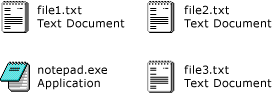

Практическое руководство. Отображение содержимого элемента управления ListView в Windows Forms в виде мозаичного представления
Функция мозаичного представления элемента управления ListView обеспечивает визуальный баланс между графическими и текстовыми представлениями информации. Текстовые данные, отображаемые для мозаичного представления элемента совпадают с данными о столбцах, определенных для подробного представления. Мозаичное представление работает в сочетании с возможностями группирования или вставки метки элемента управления ListView.
Мозаичное представление использует значок размером 32 x 32 пикселя и несколько строк текста, как показано на следующих рисунках.

Чтобы включить мозаичное представление, присвойте свойству View значение Tile. Размер элементов мозаики можно настроить, задав свойство TileSize и количество отображаемых строк текста в плитке путем настройки коллекции Columns.
Note
Функция мозаичного представления доступна только в Windows XP Home Edition, Windows XP Professional, Windows Server 2003, когда приложение вызывает метод Application.EnableVisualStyles. В предыдущих версиях операционных систем код, связанный с мозаичным представлением, не оказывает никакого влияния, элемент управления ListView отображается в представлении крупных значков. Дополнительные сведения см. в разделе ListView.View.
Выбор мозаичного представления программными средствами
Используйте перечисление View элемента управления ListView.
ListView1.View = View.TilelistView1.View = View.Tile;
Пример
В завершенном примере кода ниже показано мозаичное представление с плиткой, в которой отображаются три строки текста. Размер мозаики был подобран для предотвращения переноса строк.
Warning
It looks like the sample you are looking for does not exist.
using System;
using System.Drawing;
using System.Windows.Forms;
public class ListViewTilingExample : Form
{
private ImageList myImageList;
public ListViewTilingExample()
{
// Initialize myListView.
ListView myListView = new ListView();
myListView.Dock = DockStyle.Fill;
myListView.View = View.Tile;
// Initialize the tile size.
myListView.TileSize = new Size(400, 45);
// Initialize the item icons.
myImageList = new ImageList();
using (Icon myIcon = new Icon("book.ico"))
{
myImageList.Images.Add(myIcon);
}
myImageList.ImageSize = new Size(32, 32);
myListView.LargeImageList = myImageList;
// Add column headers so the subitems will appear.
myListView.Columns.AddRange(new ColumnHeader[]
{new ColumnHeader(), new ColumnHeader(), new ColumnHeader()});
// Create items and add them to myListView.
ListViewItem item0 = new ListViewItem( new string[]
{"Programming Windows",
"Petzold, Charles",
"1998"}, 0 );
ListViewItem item1 = new ListViewItem( new string[]
{"Code: The Hidden Language of Computer Hardware and Software",
"Petzold, Charles",
"2000"}, 0 );
ListViewItem item2 = new ListViewItem( new string[]
{"Programming Windows with C#",
"Petzold, Charles",
"2001"}, 0 );
ListViewItem item3 = new ListViewItem( new string[]
{"Coding Techniques for Microsoft Visual Basic .NET",
"Connell, John",
"2001"}, 0 );
ListViewItem item4 = new ListViewItem( new string[]
{"C# for Java Developers",
"Jones, Allen & Freeman, Adam",
"2002"}, 0 );
ListViewItem item5 = new ListViewItem( new string[]
{"Microsoft .NET XML Web Services Step by Step",
"Jones, Allen & Freeman, Adam",
"2002"}, 0 );
myListView.Items.AddRange(
new ListViewItem[] {item0, item1, item2, item3, item4, item5});
// Initialize the form.
this.Controls.Add(myListView);
this.Size = new System.Drawing.Size(430, 330);
this.Text = "ListView Tiling Example";
}
// Clean up any resources being used.
protected override void Dispose(bool disposing)
{
if (disposing)
{
myImageList.Dispose();
}
base.Dispose(disposing);
}
[STAThread]
static void Main()
{
Application.EnableVisualStyles();
Application.Run(new ListViewTilingExample());
}
}
Warning
It looks like the sample you are looking for does not exist.
Компиляция кода
Для этого примера требуются:
ссылки на сборки System и System.Windows.Forms;
файл значка с именем book.ico в том же каталоге, что и исполняемый файл.
Сведения о выполнении сборки этого примера из командной строки для Visual Basic или Visual C#, см. в разделе построение из командной строки или командной строки создания с помощью csc.exe. Можно также сборке этого примера в Visual Studio путем вставки кода в новый проект.